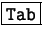
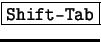

Pulsando sobre el objeto, se selecciona. Si el objeto no tiene relleno, es necesario pulsar sobre su línea.
Pulsando la tecla  se van seleccionando todos los objetos por el orden en que se han creado. Con  se van seleccionando en orden inverso al de creación.
Si hay varios objetos apilados, pulsando sobre ellos con  pulsada se van seleccionando de arriba hacia abajo y con
pulsada se van seleccionando de arriba hacia abajo y con
 pulsada, de abajo hacia arriba.
pulsada, de abajo hacia arriba.